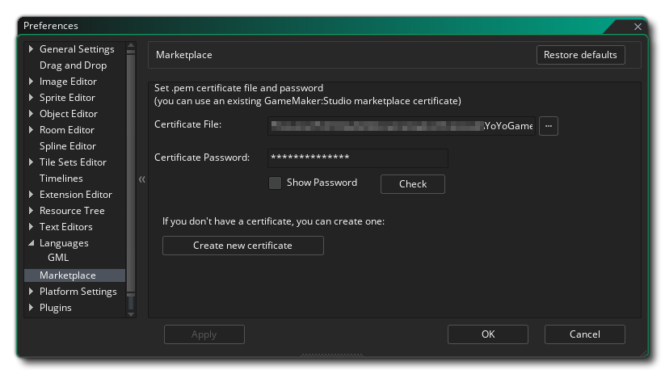

Les préférences du marché permettent de configurer le certificat de marché pour télécharger ou acheter des actifs. Le formulaire de certificat comprend les sections suivantes lorsque vous avez déjà créé un certificat:
- Fichier de certificat: Cette section est l'endroit où vous spécifiez le *.pem fichier que Marketplace utilise pour la certification des actifs. Si vous avez un certificat précédemment créé, vous pouvez cliquer sur le bouton du navigateur ici et l'ajouter au forum, mais si vous n'avez pas de certificat et que vous souhaitez en créer un, vous devez omettre toute information ici et cliquer à la place Créer un nouveau bouton de certificat expliqué ci-dessous.
- Mot de passe du certificat: Vous devez saisir ici le mot de passe du certificat pour le fichier sélectionné ci-dessus. Le mot de passe est créé lorsque vous créez le *.pem fichier (voir Créer un nouveau certificat, ci-dessous) et sera irréversiblement lié au fichier de certificat créé.
- Vérifier: Une fois que vous avez rempli les champs ci-dessus, vous devez cliquer sur ce bouton pour vous assurer que le mot de passe et la sélection du fichier sont corrects et fonctionnent ensemble.
Créer un nouveau certificat
Si vous n'avez pas encore créé de fichier de certificat pour utiliser Marketplace, vous devez cliquer sur le bouton intitulé Créer un nouveau certificat au bas de ce formulaire. Lorsque vous faites cela, une nouvelle fenêtre s'ouvrira demandant de saisir les informations suivantes:
- Nom de l'éditeur: il s'agit du nom qui sera utilisé comme nom d'éditeur pour l'actif. Dans le tableau de bord Marketplace, vous pouvez configurer différents éditeurs si vous le souhaitez et chacun doit avoir son propre correspondant *.pem fichier de certificat.
- Mot de passe du certificat: Vous devez indiquer ici un mot de passe unique pour le fichier de certificat à créer. Faites attention à ce que vous choisissez car vous ne pourrez pas le changer plus tard et si vous n'avez pas le bon mot de passe pour le fichier de certificat dans les sections ci-dessus, vous ne pourrez pas mettre à jour les actifs existants du Marketplace (ni en télécharger de nouveaux).

Avec ces détails donnés, vous pouvez ensuite cliquer sur le bouton Créer un certificat pour générer le *.pem fichier. Vous serez invité à donner un emplacement de sauvegarde et un nom pour le fichier, et vous devriez en prendre note pour référence future. Une fois que vous avez fait cela, le nouveau fichier et le mot de passe seront automatiquement ajoutés dans les champs de formulaire énumérés ci-dessus et vous pouvez cliquer sur le bouton Vérifier pour vérifier que le certificat a été généré correctement.